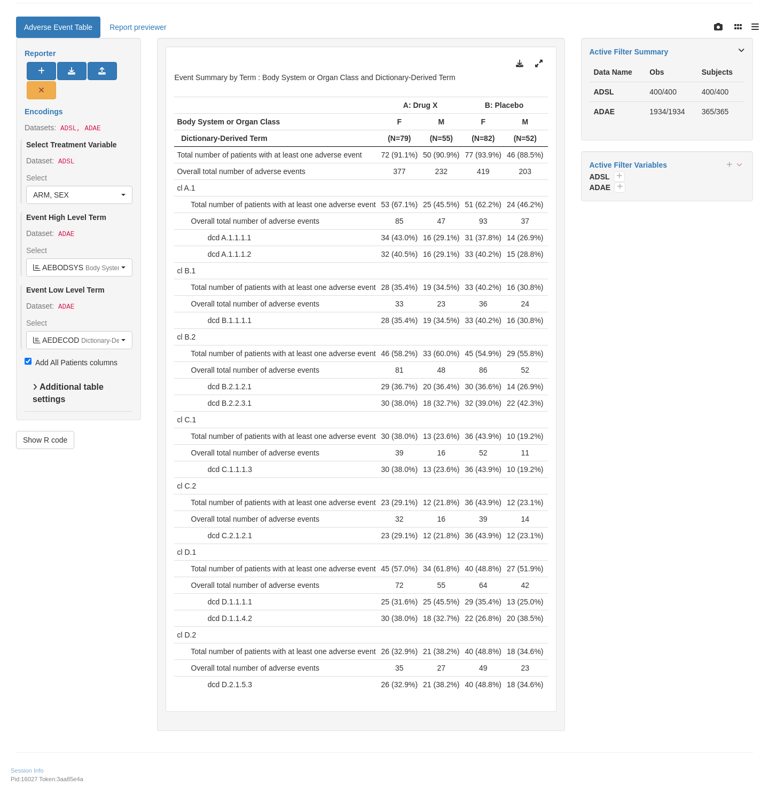

split_fun <- drop_split_levelslyt <-basic_table(show_colcounts =TRUE) %>%split_cols_by("ARM") %>%split_cols_by("SEX") %>%analyze_num_patients(vars ="USUBJID",.stats =c("unique", "nonunique"),.labels =c(unique ="Total number of patients with at least one adverse event",nonunique ="Overall total number of events" ) ) %>%split_rows_by("AEBODSYS",child_labels ="visible",nested =FALSE,split_fun = split_fun,label_pos ="topleft",split_label =obj_label(adae$AEBODSYS) ) %>%summarize_num_patients(var ="USUBJID",.stats =c("unique", "nonunique"),.labels =c(unique ="Total number of patients with at least one adverse event",nonunique ="Total number of events" ) ) %>%count_occurrences(vars ="AEDECOD", .indent_mods =-1L) %>%append_varlabels(adae, "AEDECOD", indent =1L)result <-build_table(lyt = lyt,df = adae,alt_counts_df = adsl) %>%prune_table() %>%# Sorted by decreasing frequency across all groups by System Organ Class and Preferred Term.sort_at_path(path =c("AEBODSYS"),scorefun = cont_n_allcols ) %>%sort_at_path(path =c("AEBODSYS", "*", "AEDECOD"),scorefun = score_occurrences )result
A: Drug X B: Placebo C: Combination
Body System or Organ Class F M F M F M
Dictionary-Derived Term (N=79) (N=55) (N=82) (N=52) (N=70) (N=62)
————————————————————————————————————————————————————————————————————————————————————————————————————————————————————————————————————————
Total number of patients with at least one adverse event 72 (91.1%) 50 (90.9%) 77 (93.9%) 46 (88.5%) 65 (92.9%) 55 (88.7%)
Overall total number of events 377 232 419 203 378 325
cl A.1
Total number of patients with at least one adverse event 53 (67.1%) 25 (45.5%) 51 (62.2%) 24 (46.2%) 43 (61.4%) 46 (74.2%)
Total number of events 85 47 93 37 86 74
dcd A.1.1.1.1 34 (43.0%) 16 (29.1%) 31 (37.8%) 14 (26.9%) 33 (47.1%) 30 (48.4%)
dcd A.1.1.1.2 32 (40.5%) 16 (29.1%) 33 (40.2%) 15 (28.8%) 24 (34.3%) 26 (41.9%)
cl B.2
Total number of patients with at least one adverse event 46 (58.2%) 33 (60.0%) 45 (54.9%) 29 (55.8%) 44 (62.9%) 41 (66.1%)
Total number of events 81 48 86 52 64 79
dcd B.2.2.3.1 30 (38.0%) 18 (32.7%) 32 (39.0%) 22 (42.3%) 26 (37.1%) 25 (40.3%)
dcd B.2.1.2.1 29 (36.7%) 20 (36.4%) 30 (36.6%) 14 (26.9%) 22 (31.4%) 30 (48.4%)
cl D.1
Total number of patients with at least one adverse event 45 (57.0%) 34 (61.8%) 40 (48.8%) 27 (51.9%) 41 (58.6%) 39 (62.9%)
Total number of events 72 55 64 42 73 62
dcd D.1.1.1.1 25 (31.6%) 25 (45.5%) 29 (35.4%) 13 (25.0%) 27 (38.6%) 24 (38.7%)
dcd D.1.1.4.2 30 (38.0%) 18 (32.7%) 22 (26.8%) 20 (38.5%) 27 (38.6%) 23 (37.1%)
cl D.2
Total number of patients with at least one adverse event 26 (32.9%) 21 (38.2%) 40 (48.8%) 18 (34.6%) 34 (48.6%) 23 (37.1%)
Total number of events 35 27 49 23 43 31
dcd D.2.1.5.3 26 (32.9%) 21 (38.2%) 40 (48.8%) 18 (34.6%) 34 (48.6%) 23 (37.1%)
cl B.1
Total number of patients with at least one adverse event 28 (35.4%) 19 (34.5%) 33 (40.2%) 16 (30.8%) 24 (34.3%) 19 (30.6%)
Total number of events 33 23 36 24 35 27
dcd B.1.1.1.1 28 (35.4%) 19 (34.5%) 33 (40.2%) 16 (30.8%) 24 (34.3%) 19 (30.6%)
cl C.2
Total number of patients with at least one adverse event 23 (29.1%) 12 (21.8%) 36 (43.9%) 12 (23.1%) 30 (42.9%) 25 (40.3%)
Total number of events 32 16 39 14 33 32
dcd C.2.1.2.1 23 (29.1%) 12 (21.8%) 36 (43.9%) 12 (23.1%) 30 (42.9%) 25 (40.3%)
cl C.1
Total number of patients with at least one adverse event 30 (38.0%) 13 (23.6%) 36 (43.9%) 10 (19.2%) 27 (38.6%) 16 (25.8%)
Total number of events 39 16 52 11 44 20
dcd C.1.1.1.3 30 (38.0%) 13 (23.6%) 36 (43.9%) 10 (19.2%) 27 (38.6%) 16 (25.8%)
Experimental use!
WebR is a tool allowing you to run R code in the web browser. Modify the code below and click run to see the results. Altenatively, copy the code and click here to open WebR in a new tab.
split_fun <- drop_split_levelslyt <-basic_table(show_colcounts =TRUE) %>%split_cols_by("ARM") %>%split_cols_by("BMRKR2") %>%analyze_num_patients(vars ="USUBJID",.stats =c("unique", "nonunique"),.labels =c(unique ="Total number of patients with at least one adverse event",nonunique ="Overall total number of events" ) ) %>%split_rows_by("AEBODSYS",child_labels ="visible",nested =FALSE,split_fun = split_fun,label_pos ="topleft",split_label =obj_label(adae$AEBODSYS) ) %>%summarize_num_patients(var ="USUBJID",.stats =c("unique", "nonunique"),.labels =c(unique ="Total number of patients with at least one adverse event",nonunique ="Total number of events" ) ) %>%count_occurrences(vars ="AEDECOD", .indent_mods =-1L) %>%append_varlabels(adae, "AEDECOD", indent =1L)result <-build_table(lyt = lyt,df = adae,alt_counts_df = adsl) %>%prune_table() %>%# Sorted by decreasing frequency across all groups by System Organ Class and Preferred Term.sort_at_path(path =c("AEBODSYS"),scorefun = cont_n_allcols ) %>%sort_at_path(path =c("AEBODSYS", "*", "AEDECOD"),scorefun = score_occurrences )result
A: Drug X B: Placebo C: Combination
Body System or Organ Class LOW MEDIUM HIGH LOW MEDIUM HIGH LOW MEDIUM HIGH
Dictionary-Derived Term (N=50) (N=37) (N=47) (N=45) (N=56) (N=33) (N=40) (N=42) (N=50)
———————————————————————————————————————————————————————————————————————————————————————————————————————————————————————————————————————————————————————————————————————————————
Total number of patients with at least one adverse event 46 (92.0%) 34 (91.9%) 42 (89.4%) 40 (88.9%) 53 (94.6%) 30 (90.9%) 36 (90.0%) 39 (92.9%) 45 (90.0%)
Overall total number of events 248 166 195 196 261 165 220 258 225
cl A.1
Total number of patients with at least one adverse event 31 (62.0%) 19 (51.4%) 28 (59.6%) 25 (55.6%) 31 (55.4%) 19 (57.6%) 28 (70.0%) 30 (71.4%) 31 (62.0%)
Total number of events 53 34 45 46 54 30 61 51 48
dcd A.1.1.1.1 22 (44.0%) 10 (27.0%) 18 (38.3%) 14 (31.1%) 20 (35.7%) 11 (33.3%) 21 (52.5%) 24 (57.1%) 18 (36.0%)
dcd A.1.1.1.2 17 (34.0%) 13 (35.1%) 18 (38.3%) 18 (40.0%) 18 (32.1%) 12 (36.4%) 18 (45.0%) 14 (33.3%) 18 (36.0%)
cl B.2
Total number of patients with at least one adverse event 34 (68.0%) 21 (56.8%) 24 (51.1%) 23 (51.1%) 33 (58.9%) 18 (54.5%) 24 (60.0%) 27 (64.3%) 34 (68.0%)
Total number of events 53 37 39 40 61 37 40 47 56
dcd B.2.2.3.1 21 (42.0%) 13 (35.1%) 14 (29.8%) 18 (40.0%) 22 (39.3%) 14 (42.4%) 16 (40.0%) 15 (35.7%) 20 (40.0%)
dcd B.2.1.2.1 21 (42.0%) 11 (29.7%) 17 (36.2%) 11 (24.4%) 21 (37.5%) 12 (36.4%) 13 (32.5%) 17 (40.5%) 22 (44.0%)
cl D.1
Total number of patients with at least one adverse event 34 (68.0%) 21 (56.8%) 24 (51.1%) 18 (40.0%) 33 (58.9%) 16 (48.5%) 25 (62.5%) 31 (73.8%) 24 (48.0%)
Total number of events 51 35 41 27 49 30 45 53 37
dcd D.1.1.1.1 19 (38.0%) 16 (43.2%) 15 (31.9%) 13 (28.9%) 19 (33.9%) 10 (30.3%) 14 (35.0%) 22 (52.4%) 15 (30.0%)
dcd D.1.1.4.2 21 (42.0%) 9 (24.3%) 18 (38.3%) 9 (20.0%) 20 (35.7%) 13 (39.4%) 17 (42.5%) 18 (42.9%) 15 (30.0%)
cl D.2
Total number of patients with at least one adverse event 20 (40.0%) 12 (32.4%) 15 (31.9%) 19 (42.2%) 22 (39.3%) 17 (51.5%) 13 (32.5%) 23 (54.8%) 21 (42.0%)
Total number of events 27 13 22 23 26 23 17 33 24
dcd D.2.1.5.3 20 (40.0%) 12 (32.4%) 15 (31.9%) 19 (42.2%) 22 (39.3%) 17 (51.5%) 13 (32.5%) 23 (54.8%) 21 (42.0%)
cl B.1
Total number of patients with at least one adverse event 14 (28.0%) 14 (37.8%) 19 (40.4%) 15 (33.3%) 24 (42.9%) 10 (30.3%) 14 (35.0%) 15 (35.7%) 14 (28.0%)
Total number of events 16 19 21 18 25 17 19 25 18
dcd B.1.1.1.1 14 (28.0%) 14 (37.8%) 19 (40.4%) 15 (33.3%) 24 (42.9%) 10 (30.3%) 14 (35.0%) 15 (35.7%) 14 (28.0%)
cl C.2
Total number of patients with at least one adverse event 18 (36.0%) 8 (21.6%) 9 (19.1%) 15 (33.3%) 22 (39.3%) 11 (33.3%) 18 (45.0%) 17 (40.5%) 20 (40.0%)
Total number of events 27 9 12 18 23 12 20 20 25
dcd C.2.1.2.1 18 (36.0%) 8 (21.6%) 9 (19.1%) 15 (33.3%) 22 (39.3%) 11 (33.3%) 18 (45.0%) 17 (40.5%) 20 (40.0%)
cl C.1
Total number of patients with at least one adverse event 17 (34.0%) 14 (37.8%) 12 (25.5%) 17 (37.8%) 17 (30.4%) 12 (36.4%) 12 (30.0%) 17 (40.5%) 14 (28.0%)
Total number of events 21 19 15 24 23 16 18 29 17
dcd C.1.1.1.3 17 (34.0%) 14 (37.8%) 12 (25.5%) 17 (37.8%) 17 (30.4%) 12 (36.4%) 12 (30.0%) 17 (40.5%) 14 (28.0%)
Experimental use!
WebR is a tool allowing you to run R code in the web browser. Modify the code below and click run to see the results. Altenatively, copy the code and click here to open WebR in a new tab.
split_fun <- drop_split_levelslyt <-basic_table(show_colcounts =TRUE) %>%split_cols_by("ARM") %>%split_cols_by("AVALCAT1") %>%analyze_num_patients(vars ="USUBJID",.stats =c("unique", "nonunique"),.labels =c(unique ="Total number of patients with at least one adverse event",nonunique ="Overall total number of events" ) ) %>%split_rows_by("AEBODSYS",child_labels ="visible",nested =FALSE,split_fun = split_fun,label_pos ="topleft",split_label =obj_label(adae$AEBODSYS) ) %>%summarize_num_patients(var ="USUBJID",.stats =c("unique", "nonunique"),.labels =c(unique ="Total number of patients with at least one adverse event",nonunique ="Total number of events" ) ) %>%count_occurrences(vars ="AEDECOD", .indent_mods =-1L) %>%append_varlabels(adae, "AEDECOD", indent =1L)result <-build_table(lyt = lyt,df = adae,alt_counts_df = adsl) %>%prune_table() %>%# Sorted by decreasing frequency across all groups by System Organ Class and Preferred Term.sort_at_path(path =c("AEBODSYS"),scorefun = cont_n_allcols ) %>%sort_at_path(path =c("AEBODSYS", "*", "AEDECOD"),scorefun = score_occurrences )result
A: Drug X B: Placebo C: Combination
Body System or Organ Class <18.5 18.5 - 24.9 25 - 29.9 >30 <18.5 18.5 - 24.9 25 - 29.9 >30 <18.5 18.5 - 24.9 25 - 29.9 >30
Dictionary-Derived Term (N=44) (N=17) (N=11) (N=62) (N=37) (N=18) (N=10) (N=69) (N=28) (N=20) (N=18) (N=66)
———————————————————————————————————————————————————————————————————————————————————————————————————————————————————————————————————————————————————————————————————————————————————————————————————————————————————————
Total number of patients with at least one adverse event 41 (93.2%) 14 (82.4%) 11 (100%) 56 (90.3%) 35 (94.6%) 16 (88.9%) 9 (90.0%) 63 (91.3%) 25 (89.3%) 19 (95.0%) 15 (83.3%) 61 (92.4%)
Overall total number of events 186 80 66 277 174 89 47 312 137 129 100 337
cl A.1
Total number of patients with at least one adverse event 23 (52.3%) 12 (70.6%) 7 (63.6%) 36 (58.1%) 19 (51.4%) 10 (55.6%) 6 (60.0%) 40 (58.0%) 16 (57.1%) 13 (65.0%) 14 (77.8%) 46 (69.7%)
Total number of events 38 22 13 59 35 22 6 67 30 23 30 77
dcd A.1.1.1.1 14 (31.8%) 7 (41.2%) 3 (27.3%) 26 (41.9%) 12 (32.4%) 6 (33.3%) 4 (40.0%) 23 (33.3%) 12 (42.9%) 7 (35.0%) 13 (72.2%) 31 (47.0%)
dcd A.1.1.1.2 15 (34.1%) 8 (47.1%) 5 (45.5%) 20 (32.3%) 12 (32.4%) 8 (44.4%) 2 (20.0%) 26 (37.7%) 9 (32.1%) 7 (35.0%) 7 (38.9%) 27 (40.9%)
cl B.2
Total number of patients with at least one adverse event 23 (52.3%) 10 (58.8%) 8 (72.7%) 38 (61.3%) 21 (56.8%) 8 (44.4%) 7 (70.0%) 38 (55.1%) 16 (57.1%) 16 (80.0%) 12 (66.7%) 41 (62.1%)
Total number of events 37 19 12 61 41 18 12 67 28 28 18 69
dcd B.2.2.3.1 13 (29.5%) 7 (41.2%) 6 (54.5%) 22 (35.5%) 14 (37.8%) 7 (38.9%) 6 (60.0%) 27 (39.1%) 7 (25.0%) 13 (65.0%) 5 (27.8%) 26 (39.4%)
dcd B.2.1.2.1 14 (31.8%) 8 (47.1%) 4 (36.4%) 23 (37.1%) 14 (37.8%) 6 (33.3%) 4 (40.0%) 20 (29.0%) 13 (46.4%) 8 (40.0%) 8 (44.4%) 23 (34.8%)
cl D.1
Total number of patients with at least one adverse event 24 (54.5%) 9 (52.9%) 8 (72.7%) 38 (61.3%) 18 (48.6%) 5 (27.8%) 7 (70.0%) 37 (53.6%) 15 (53.6%) 12 (60.0%) 11 (61.1%) 42 (63.6%)
Total number of events 38 11 17 61 30 11 14 51 30 23 16 66
dcd D.1.1.1.1 13 (29.5%) 7 (41.2%) 7 (63.6%) 23 (37.1%) 13 (35.1%) 3 (16.7%) 4 (40.0%) 22 (31.9%) 12 (42.9%) 6 (30.0%) 8 (44.4%) 25 (37.9%)
dcd D.1.1.4.2 16 (36.4%) 4 (23.5%) 6 (54.5%) 22 (35.5%) 10 (27.0%) 4 (22.2%) 5 (50.0%) 23 (33.3%) 10 (35.7%) 9 (45.0%) 6 (33.3%) 25 (37.9%)
cl D.2
Total number of patients with at least one adverse event 14 (31.8%) 7 (41.2%) 5 (45.5%) 21 (33.9%) 14 (37.8%) 10 (55.6%) 4 (40.0%) 30 (43.5%) 13 (46.4%) 10 (50.0%) 7 (38.9%) 27 (40.9%)
Total number of events 20 7 10 25 17 14 5 36 18 15 10 31
dcd D.2.1.5.3 14 (31.8%) 7 (41.2%) 5 (45.5%) 21 (33.9%) 14 (37.8%) 10 (55.6%) 4 (40.0%) 30 (43.5%) 13 (46.4%) 10 (50.0%) 7 (38.9%) 27 (40.9%)
cl B.1
Total number of patients with at least one adverse event 17 (38.6%) 5 (29.4%) 7 (63.6%) 18 (29.0%) 14 (37.8%) 8 (44.4%) 4 (40.0%) 23 (33.3%) 7 (25.0%) 10 (50.0%) 7 (38.9%) 19 (28.8%)
Total number of events 22 5 7 22 16 11 4 29 11 12 8 31
dcd B.1.1.1.1 17 (38.6%) 5 (29.4%) 7 (63.6%) 18 (29.0%) 14 (37.8%) 8 (44.4%) 4 (40.0%) 23 (33.3%) 7 (25.0%) 10 (50.0%) 7 (38.9%) 19 (28.8%)
cl C.2
Total number of patients with at least one adverse event 14 (31.8%) 4 (23.5%) 2 (18.2%) 15 (24.2%) 15 (40.5%) 5 (27.8%) 4 (40.0%) 24 (34.8%) 10 (35.7%) 13 (65.0%) 8 (44.4%) 24 (36.4%)
Total number of events 17 9 3 19 15 6 5 27 12 16 9 28
dcd C.2.1.2.1 14 (31.8%) 4 (23.5%) 2 (18.2%) 15 (24.2%) 15 (40.5%) 5 (27.8%) 4 (40.0%) 24 (34.8%) 10 (35.7%) 13 (65.0%) 8 (44.4%) 24 (36.4%)
cl C.1
Total number of patients with at least one adverse event 11 (25.0%) 4 (23.5%) 4 (36.4%) 24 (38.7%) 13 (35.1%) 6 (33.3%) 1 (10.0%) 26 (37.7%) 6 (21.4%) 7 (35.0%) 6 (33.3%) 24 (36.4%)
Total number of events 14 7 4 30 20 7 1 35 8 12 9 35
dcd C.1.1.1.3 11 (25.0%) 4 (23.5%) 4 (36.4%) 24 (38.7%) 13 (35.1%) 6 (33.3%) 1 (10.0%) 26 (37.7%) 6 (21.4%) 7 (35.0%) 6 (33.3%) 24 (36.4%)
Experimental use!
WebR is a tool allowing you to run R code in the web browser. Modify the code below and click run to see the results. Altenatively, copy the code and click here to open WebR in a new tab.
split_fun <- drop_split_levelslyt <-basic_table(show_colcounts =TRUE) %>%split_cols_by("ARM") %>%split_cols_by("RACE1") %>%analyze_num_patients(vars ="USUBJID",.stats =c("unique", "nonunique"),.labels =c(unique ="Total number of patients with at least one adverse event",nonunique ="Overall total number of events" ) ) %>%split_rows_by("AEBODSYS",child_labels ="visible",nested =FALSE,split_fun = split_fun,label_pos ="topleft",split_label =obj_label(adae$AEBODSYS) ) %>%summarize_num_patients(var ="USUBJID",.stats =c("unique", "nonunique"),.labels =c(unique ="Total number of patients with at least one adverse event",nonunique ="Total number of events" ) ) %>%count_occurrences(vars ="AEDECOD", .indent_mods =-1L) %>%append_varlabels(adae, "AEDECOD", indent =1L)result <-build_table(lyt = lyt,df = adae,alt_counts_df = adsl) %>%prune_table() %>%prune_table() %>%# Sorted by decreasing frequency across all groups by System Organ Class and Preferred Term.sort_at_path(path =c("AEBODSYS"),scorefun = cont_n_allcols ) %>%sort_at_path(path =c("AEBODSYS", "*", "AEDECOD"),scorefun = score_occurrences )result
A: Drug X B: Placebo C: Combination
Body System or Organ Class WHITE NON-WHITE WHITE NON-WHITE WHITE NON-WHITE
Dictionary-Derived Term (N=27) (N=107) (N=26) (N=108) (N=21) (N=111)
————————————————————————————————————————————————————————————————————————————————————————————————————————————————————————————————————————
Total number of patients with at least one adverse event 26 (96.3%) 96 (89.7%) 25 (96.2%) 98 (90.7%) 21 (100%) 99 (89.2%)
Overall total number of events 109 500 144 478 114 589
cl A.1
Total number of patients with at least one adverse event 16 (59.3%) 62 (57.9%) 21 (80.8%) 54 (50.0%) 15 (71.4%) 74 (66.7%)
Total number of events 30 102 37 93 25 135
dcd A.1.1.1.1 9 (33.3%) 41 (38.3%) 14 (53.8%) 31 (28.7%) 10 (47.6%) 53 (47.7%)
dcd A.1.1.1.2 11 (40.7%) 37 (34.6%) 13 (50.0%) 35 (32.4%) 9 (42.9%) 41 (36.9%)
cl B.2
Total number of patients with at least one adverse event 15 (55.6%) 64 (59.8%) 16 (61.5%) 58 (53.7%) 12 (57.1%) 73 (65.8%)
Total number of events 18 111 28 110 17 126
dcd B.2.2.3.1 4 (14.8%) 44 (41.1%) 10 (38.5%) 44 (40.7%) 5 (23.8%) 46 (41.4%)
dcd B.2.1.2.1 12 (44.4%) 37 (34.6%) 9 (34.6%) 35 (32.4%) 7 (33.3%) 45 (40.5%)
cl D.1
Total number of patients with at least one adverse event 18 (66.7%) 61 (57.0%) 15 (57.7%) 52 (48.1%) 14 (66.7%) 66 (59.5%)
Total number of events 27 100 23 83 27 108
dcd D.1.1.1.1 11 (40.7%) 39 (36.4%) 14 (53.8%) 28 (25.9%) 12 (57.1%) 39 (35.1%)
dcd D.1.1.4.2 11 (40.7%) 37 (34.6%) 7 (26.9%) 35 (32.4%) 9 (42.9%) 41 (36.9%)
cl D.2
Total number of patients with at least one adverse event 6 (22.2%) 41 (38.3%) 15 (57.7%) 43 (39.8%) 9 (42.9%) 48 (43.2%)
Total number of events 6 56 18 54 12 62
dcd D.2.1.5.3 6 (22.2%) 41 (38.3%) 15 (57.7%) 43 (39.8%) 9 (42.9%) 48 (43.2%)
cl B.1
Total number of patients with at least one adverse event 12 (44.4%) 35 (32.7%) 7 (26.9%) 42 (38.9%) 6 (28.6%) 37 (33.3%)
Total number of events 15 41 8 52 8 54
dcd B.1.1.1.1 12 (44.4%) 35 (32.7%) 7 (26.9%) 42 (38.9%) 6 (28.6%) 37 (33.3%)
cl C.2
Total number of patients with at least one adverse event 5 (18.5%) 30 (28.0%) 11 (42.3%) 37 (34.3%) 11 (52.4%) 44 (39.6%)
Total number of events 8 40 12 41 12 53
dcd C.2.1.2.1 5 (18.5%) 30 (28.0%) 11 (42.3%) 37 (34.3%) 11 (52.4%) 44 (39.6%)
cl C.1
Total number of patients with at least one adverse event 5 (18.5%) 38 (35.5%) 13 (50.0%) 33 (30.6%) 8 (38.1%) 35 (31.5%)
Total number of events 5 50 18 45 13 51
dcd C.1.1.1.3 5 (18.5%) 38 (35.5%) 13 (50.0%) 33 (30.6%) 8 (38.1%) 35 (31.5%)
Experimental use!
WebR is a tool allowing you to run R code in the web browser. Modify the code below and click run to see the results. Altenatively, copy the code and click here to open WebR in a new tab.
split_fun <- drop_split_levelslyt <-basic_table(show_colcounts =TRUE) %>%split_cols_by("ARM") %>%split_cols_by("SEX") %>%analyze_num_patients(vars ="USUBJID",.stats =c("unique", "nonunique"),.labels =c(unique ="Total number of patients with at least one adverse event",nonunique ="Overall total number of events" ) ) %>%split_rows_by("AEBODSYS",child_labels ="visible",nested =FALSE,split_fun = split_fun,label_pos ="topleft",split_label =obj_label(adae$AEBODSYS) ) %>%summarize_num_patients(var ="USUBJID",.stats =c("unique", "nonunique"),.labels =c(unique ="Total number of patients with at least one adverse event",nonunique ="Total number of events" ) ) %>%split_rows_by("AEHLT",child_labels ="visible",indent_mod =-1L,split_fun = split_fun,label_pos ="topleft",split_label =obj_label(adae$AEHLT) ) %>%summarize_num_patients(var ="USUBJID",.stats =c("unique", "nonunique"),.labels =c(unique ="Total number of patients with at least one adverse event",nonunique ="Total number of events" ) ) %>%count_occurrences("AEDECOD", .indent_mods =-1L) %>%append_varlabels(adae, "AEDECOD", indent =2L)result <-build_table(lyt = lyt,df = adae,alt_counts_df = adsl) %>%prune_table() %>%# Sorted by decreasing frequency across all groups by System Organ Class, High-Level Term and Preferred Term.sort_at_path(path =c("AEBODSYS"),scorefun = cont_n_allcols ) %>%sort_at_path(path =c("AEBODSYS", "*", "AEHLT"),scorefun = cont_n_allcols ) %>%sort_at_path(path =c("AEBODSYS", "*", "AEHLT", "*", "AEDECOD"),scorefun = score_occurrences )result
Body System or Organ Class A: Drug X B: Placebo C: Combination
High Level Term F M F M F M
Dictionary-Derived Term (N=79) (N=55) (N=82) (N=52) (N=70) (N=62)
——————————————————————————————————————————————————————————————————————————————————————————————————————————————————————————————————————————
Total number of patients with at least one adverse event 72 (91.1%) 50 (90.9%) 77 (93.9%) 46 (88.5%) 65 (92.9%) 55 (88.7%)
Overall total number of events 377 232 419 203 378 325
cl A.1
Total number of patients with at least one adverse event 53 (67.1%) 25 (45.5%) 51 (62.2%) 24 (46.2%) 43 (61.4%) 46 (74.2%)
Total number of events 85 47 93 37 86 74
hlt A.1.1.1
Total number of patients with at least one adverse event 53 (67.1%) 25 (45.5%) 51 (62.2%) 24 (46.2%) 43 (61.4%) 46 (74.2%)
Total number of events 85 47 93 37 86 74
dcd A.1.1.1.1 34 (43.0%) 16 (29.1%) 31 (37.8%) 14 (26.9%) 33 (47.1%) 30 (48.4%)
dcd A.1.1.1.2 32 (40.5%) 16 (29.1%) 33 (40.2%) 15 (28.8%) 24 (34.3%) 26 (41.9%)
cl B.2
Total number of patients with at least one adverse event 46 (58.2%) 33 (60.0%) 45 (54.9%) 29 (55.8%) 44 (62.9%) 41 (66.1%)
Total number of events 81 48 86 52 64 79
hlt B.2.2.3
Total number of patients with at least one adverse event 30 (38.0%) 18 (32.7%) 32 (39.0%) 22 (42.3%) 26 (37.1%) 25 (40.3%)
Total number of events 40 24 43 33 37 40
dcd B.2.2.3.1 30 (38.0%) 18 (32.7%) 32 (39.0%) 22 (42.3%) 26 (37.1%) 25 (40.3%)
hlt B.2.1.2
Total number of patients with at least one adverse event 29 (36.7%) 20 (36.4%) 30 (36.6%) 14 (26.9%) 22 (31.4%) 30 (48.4%)
Total number of events 41 24 43 19 27 39
dcd B.2.1.2.1 29 (36.7%) 20 (36.4%) 30 (36.6%) 14 (26.9%) 22 (31.4%) 30 (48.4%)
cl D.1
Total number of patients with at least one adverse event 45 (57.0%) 34 (61.8%) 40 (48.8%) 27 (51.9%) 41 (58.6%) 39 (62.9%)
Total number of events 72 55 64 42 73 62
hlt D.1.1.1
Total number of patients with at least one adverse event 25 (31.6%) 25 (45.5%) 29 (35.4%) 13 (25.0%) 27 (38.6%) 24 (38.7%)
Total number of events 32 29 36 15 39 32
dcd D.1.1.1.1 25 (31.6%) 25 (45.5%) 29 (35.4%) 13 (25.0%) 27 (38.6%) 24 (38.7%)
hlt D.1.1.4
Total number of patients with at least one adverse event 30 (38.0%) 18 (32.7%) 22 (26.8%) 20 (38.5%) 27 (38.6%) 23 (37.1%)
Total number of events 40 26 28 27 34 30
dcd D.1.1.4.2 30 (38.0%) 18 (32.7%) 22 (26.8%) 20 (38.5%) 27 (38.6%) 23 (37.1%)
cl D.2
Total number of patients with at least one adverse event 26 (32.9%) 21 (38.2%) 40 (48.8%) 18 (34.6%) 34 (48.6%) 23 (37.1%)
Total number of events 35 27 49 23 43 31
hlt D.2.1.5
Total number of patients with at least one adverse event 26 (32.9%) 21 (38.2%) 40 (48.8%) 18 (34.6%) 34 (48.6%) 23 (37.1%)
Total number of events 35 27 49 23 43 31
dcd D.2.1.5.3 26 (32.9%) 21 (38.2%) 40 (48.8%) 18 (34.6%) 34 (48.6%) 23 (37.1%)
cl B.1
Total number of patients with at least one adverse event 28 (35.4%) 19 (34.5%) 33 (40.2%) 16 (30.8%) 24 (34.3%) 19 (30.6%)
Total number of events 33 23 36 24 35 27
hlt B.1.1.1
Total number of patients with at least one adverse event 28 (35.4%) 19 (34.5%) 33 (40.2%) 16 (30.8%) 24 (34.3%) 19 (30.6%)
Total number of events 33 23 36 24 35 27
dcd B.1.1.1.1 28 (35.4%) 19 (34.5%) 33 (40.2%) 16 (30.8%) 24 (34.3%) 19 (30.6%)
cl C.2
Total number of patients with at least one adverse event 23 (29.1%) 12 (21.8%) 36 (43.9%) 12 (23.1%) 30 (42.9%) 25 (40.3%)
Total number of events 32 16 39 14 33 32
hlt C.2.1.2
Total number of patients with at least one adverse event 23 (29.1%) 12 (21.8%) 36 (43.9%) 12 (23.1%) 30 (42.9%) 25 (40.3%)
Total number of events 32 16 39 14 33 32
dcd C.2.1.2.1 23 (29.1%) 12 (21.8%) 36 (43.9%) 12 (23.1%) 30 (42.9%) 25 (40.3%)
cl C.1
Total number of patients with at least one adverse event 30 (38.0%) 13 (23.6%) 36 (43.9%) 10 (19.2%) 27 (38.6%) 16 (25.8%)
Total number of events 39 16 52 11 44 20
hlt C.1.1.1
Total number of patients with at least one adverse event 30 (38.0%) 13 (23.6%) 36 (43.9%) 10 (19.2%) 27 (38.6%) 16 (25.8%)
Total number of events 39 16 52 11 44 20
dcd C.1.1.1.3 30 (38.0%) 13 (23.6%) 36 (43.9%) 10 (19.2%) 27 (38.6%) 16 (25.8%)
Experimental use!
WebR is a tool allowing you to run R code in the web browser. Modify the code below and click run to see the results. Altenatively, copy the code and click here to open WebR in a new tab.
library(teal.modules.clinical)## Data reproducible codedata <-teal_data()data <-within(data, { ADSL <- random.cdisc.data::cadsl ADAE <- random.cdisc.data::cadae# Ensure character variables are converted to factors and empty strings and NAs are explicit missing levels. ADSL <-df_explicit_na(ADSL) ADAE <-df_explicit_na(ADAE)})datanames <-c("ADSL", "ADAE")datanames(data) <- datanamesjoin_keys(data) <- default_cdisc_join_keys[datanames]## Reusable Configuration For ModulesADAE <- data[["ADAE"]]## Setup Appapp <-init(data = data,modules =modules(tm_t_events(label ="Adverse Event Table",dataname ="ADAE",arm_var =choices_selected(c("ARM", "ARMCD", "SEX"), c("ARM", "SEX")),llt =choices_selected(choices =variable_choices(ADAE, c("AETERM", "AEDECOD")),selected =c("AEDECOD") ),hlt =choices_selected(choices =variable_choices(ADAE, c("AEBODSYS", "AESOC")),selected ="AEBODSYS" ),add_total =TRUE,event_type ="adverse event" ) ))shinyApp(app$ui, app$server)

Experimental use!
shinylive allow you to modify to run shiny application entirely in the web browser. Modify the code below and click re-run the app to see the results. The performance is slighly worse and some of the features (e.g. downloading) might not work at all.